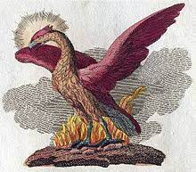
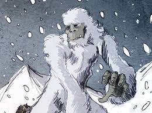
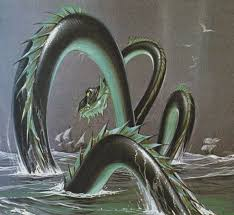
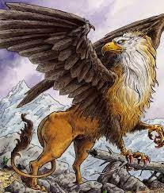
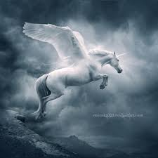
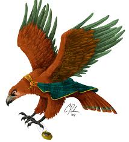
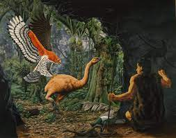
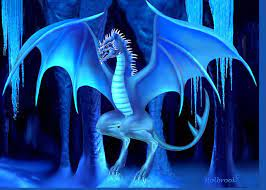
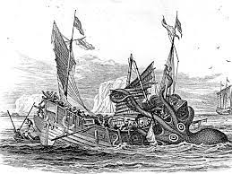
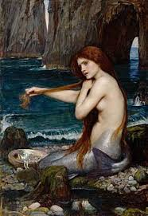

| Number | Animal name | Image | Description |
|---|---|---|---|
| 1 | Phoenix |  | The phoenix is a long-lived, immortal bird associated with Greek mythology that cyclically regenerates or is otherwise born again. Associated with the sun, a phoenix obtains new life by arising from the ashes of its predecessor. |
| 2 | Yeti |  | In Nepal's folklore, Yeti is an "abominable Snowman", who looks like an ape, is taller than an average human and is believed to live in the Himalayas, Siberia, Central and East Asia. Yeti, during pre-19th century, has been believed to be a "Glacier Being" who was worshipped by the indigenous communities |
| 3 | Sea Serpent |  | Sea serpent, mythological and legendary marine animal that traditionally resembles an enormous snake. The belief in huge creatures that inhabited the deep was widespread throughout the ancient world. |
| 4 | Griffins |  | Griffin, also spelled griffon or gryphon, composite mythological creature with a lion's body (winged or wingless) and a bird's head, usually that of an eagle. ... Probably originating in the Levant in the 2nd millennium bce, the griffin had spread throughout western Asia and into Greece by the 14th century bce. |
| 5 | Unicorns |  | The unicorn is a legendary creature that has been described since antiquity as a beast with a single large, pointed, spiraling horn projecting from its forehead |
| 6 | Roc |  | The Roc is a raptor (another name for bird of prey) of immense size and predominantly white in color. With a supposed wingspan of 48 feet and feathers the size of palm leaves, the Roc could carry away adult elephants with ease. |
| 7 | Pouakai |  | Pouakai the monster, sometimes also known as Hokioi, was a fabled flying beast which would snatch unwary children who ventured out too early in the mornings or stayed away from their homes late in the evenings. These stories are part of the tribal lore of most Taranaki, Tainui and Whanganui tribes. |
| 8 | Dragon |  | Dragon, in the mythologies, legends, and folktales of various cultures, a large lizard- or serpent-like creature, conceived in some traditions as evil and in others as beneficent. In medieval Europe, dragons were usually depicted with wings and a barbed tail and as breathing fire. |
| 9 | Kraken |  | According to the Norse sagas, the kraken dwells off the coasts of Norway and Greenland and terrorizes nearby sailors. Authors over the years have postulated that the legend may have originated from sightings of giant squids that may grow to 13–15 meters (40–50 feet) in length. |
| 10 | Mermaid |  | In folklore, a mermaid is an aquatic creature with the head and upper body of a female human and the tail of a fish. ... The conception of mermaids in the West may have been influenced by the Sirens of Greek mythology, which were originally half-birdlike, but came to be pictured as half-fishlike in the Christian era. |